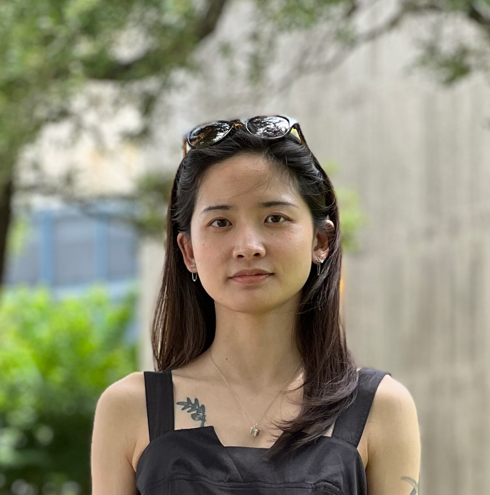
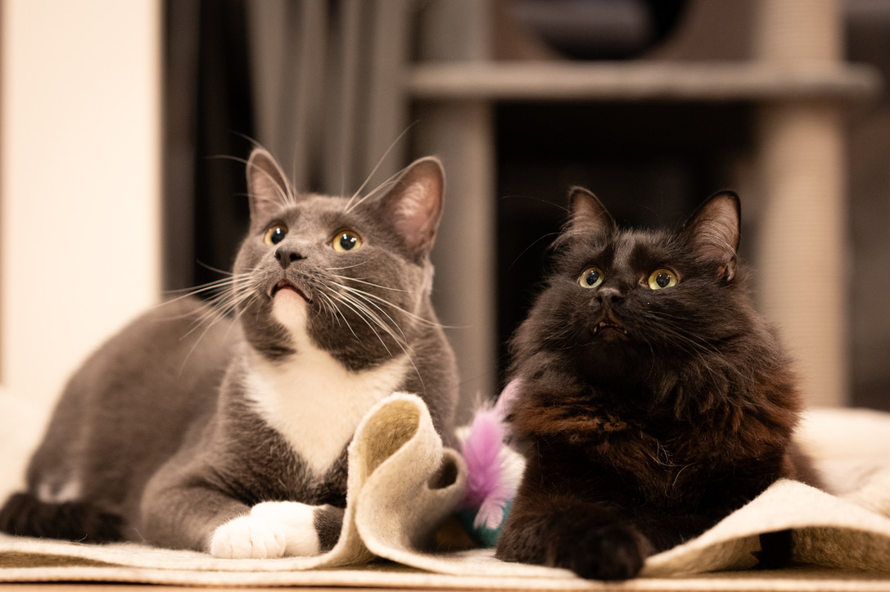

About Me
I’m a Ph.D. student at the University of Wisconsin–Madison, working at the intersection of machine learning and biomedical data. I transitioned into Biomedical Data Science from Educational Psychology, drawn by the potential of algorithms to make sense of complex datasets like medical images and CTG signals.
My research focuses on deep learning models applied to clinical problems, especially where data are high-dimensional, multimodal, or scarce. I'm passionate about building tools that improve diagnostics and understanding in medical settings. On theoretical side, I'm interested in clustering and representation learning, particularly in how to make models more interpretable and robust.
Ongoing Projects
1. Multimodal Deep Learning for Ovarian Cancer
The ultimate goal of this project is to adapt multimodal biomedical foundation models to help the report generation, diagnosis, phrase grounding of ovarian cancer. This project bridges text and image modalities in a challenging domain where biopsy isn’t practical. While our private dataset is under annotated, we leverage large public datasets to pretrain models and transfer the knowledge to our target domain. We benchmarked several multimodal models that are specialized for medical images and texts, including PubMedCLIP, ConVIRT, MedCLIP, BioViL, and BiomedCLIP. Find more details in the github repo: Benchmarking Multimodal CXR
2. Generalized Nonnegative Matrix Factorization (NMF)
NMF is a powerful technique for extracting interpretable features from high-dimensional data. We're developing a generalized framework that incorporates prior knowledge and constraints, improving its applicability to data lying in a union of subspaces.
3. Time-Series Deep Models for CTG Analysis
We are designing a deep learning model for early diagnosis of neonatal encephalopathy from CTG signals. The project tackles high-dimensional data, variable lengths, and low sample sizes with augmentation and novel architectures.
Personal Life
Outside of research, I enjoy baking bread — especially sourdough — and exploring local cafés. I also love rock climbing (mostly indoor) and snowboarding.
I share my home with two lovely cats (or maybe the cats share home with me?):
- Boba: a small black American long-hair, curious and playful
- Nemo: a large tuxedo grey-and-white American short-hair, gentle and sleepy
They’ve accompanied me across the country, and bring joy to my daily life.
